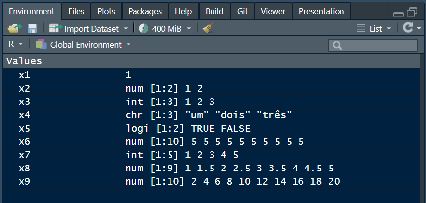
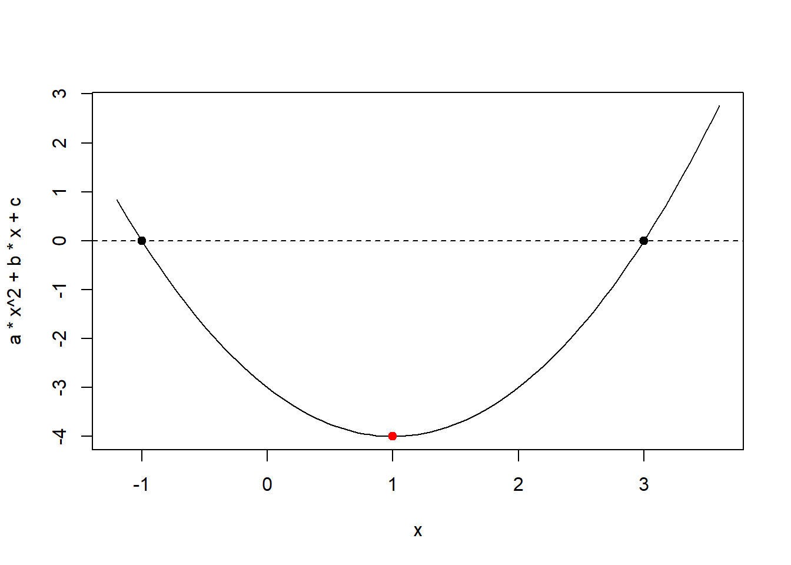
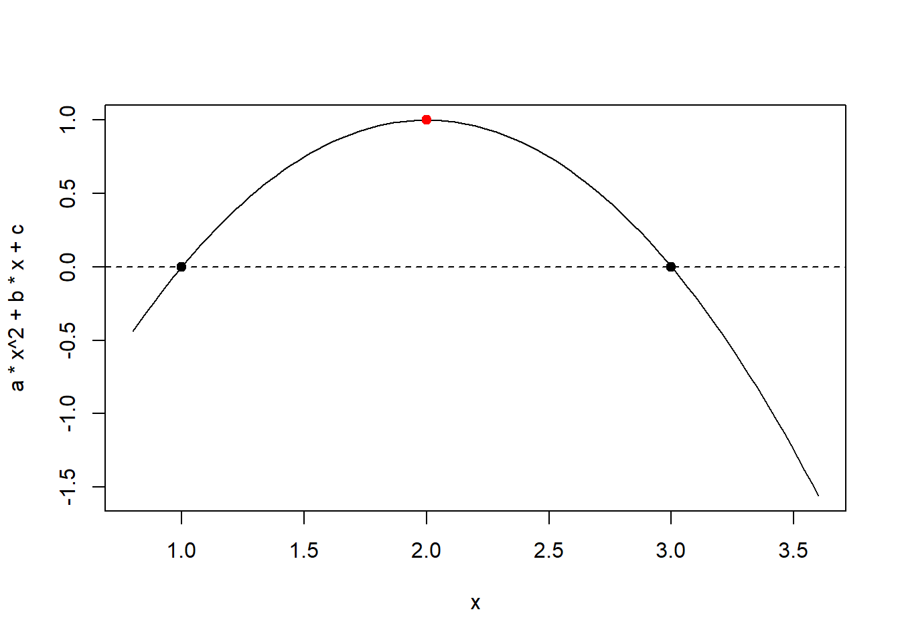
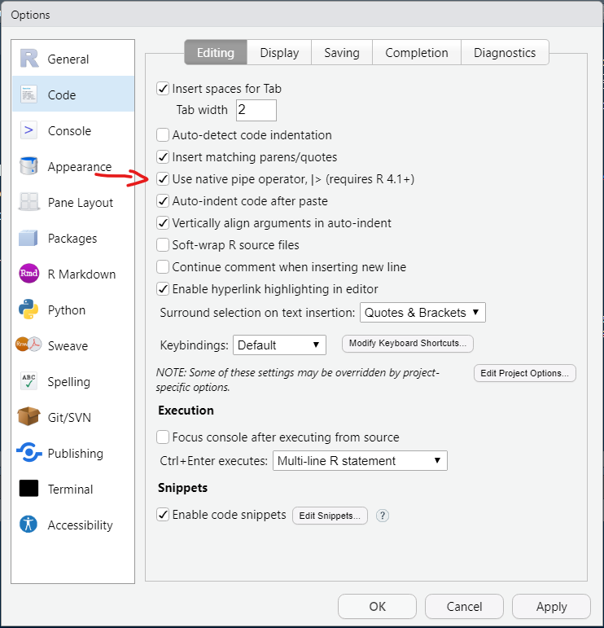
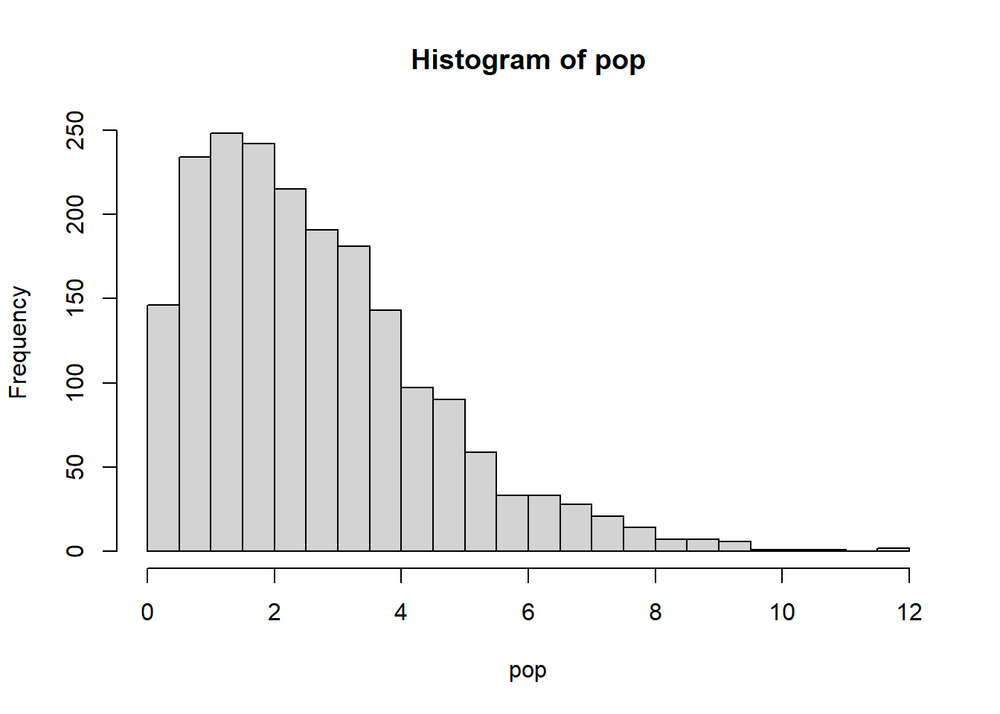
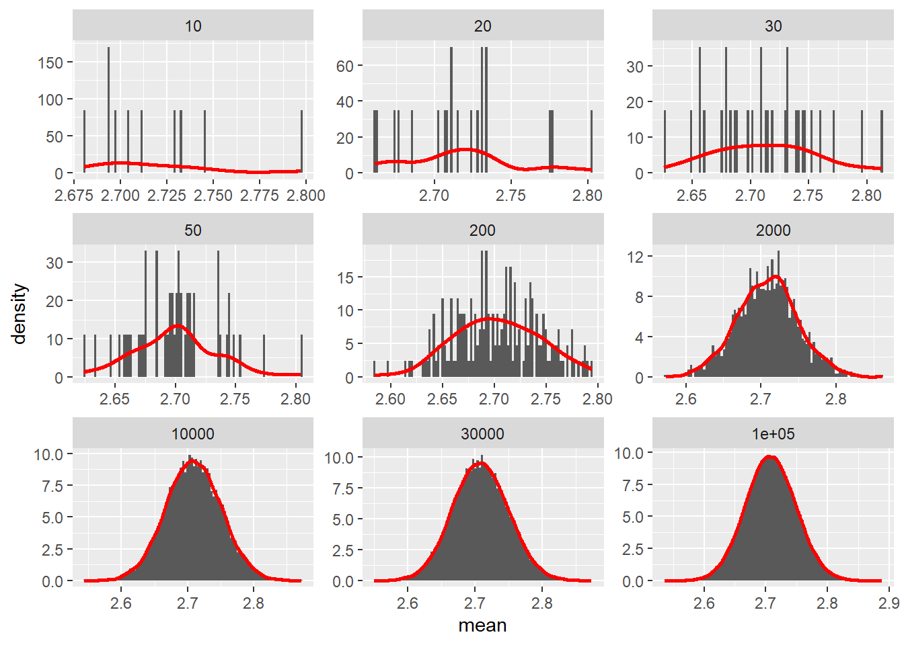

(x1 <- 1) # Escalar [1] 1(x2 <- c(1, 2, 3.5)) # Vetor[1] 1.0 2.0 3.5typeof(x2)[1] "double"Neste material, serão vistos conceitos importantes envolvidos na programação R que envolvem o conhecimento dos tipos de objetos, estruturas de dados e lógica de programação.
R é uma linguagem orientada a objetos: um objeto em R é qualquer coisa (constantes, estruturas de dados, funções, gráficos) que podem ser atribuídas a uma variável. Os principais objetos usados para armazenar valores numéricos reais ou complexos, valores lógicos ou caracteres são:
Vetores: arrays unidimensionais usados para armazenar dados de coleção do mesmo modo
Vetores Numéricos (modo: numérico)
Vetores Complexos (modo: complexo)
Vetores Lógicos (modelo: lógico)
Character Vector ou strings de texto (modo: caractere)
Matrizes: arrays bidimensionais para armazenar coleções de dados do mesmo modo. Eles são acessados por dois índices inteiros.
Arrays: semelhantes a matrizes, mas podem ser multidimensionais (mais de duas dimensões)
Fatores: vetores de variáveis categóricas destinados a agrupar os componentes de outro vetor com o mesmo tamanho
Listas: coleção ordenada de objetos, onde os elementos podem ser de diferentes tipos
Data Frames: generalização de matrizes onde diferentes colunas podem armazenar dados de modos diferentes.

Existem quatro tipos principais de estruturas de dados, que podem ser interpretadas como: logical, integer, double e character (que contém cadeias de caracteres). Vetores do tipo integer e double são conhecidos como vetores numéricos. Cada um dos quatro tipos primários possui uma sintaxe especial para criar um valor individual, um escalar. A função c() combina valores que formam vetores1. Abaixo, é demonstrado como vetores podem ser criados utilizando c(). Note que o código é dado entre parênteses (...) para que o valor seja armazenado no ambiente ao mesmo tempo em que é impresso no console.
Vetores do tipo double podem ser especificadas em formato decimal (0.1234) ou científico (1.23e4).
(x1 <- 1) # Escalar [1] 1(x2 <- c(1, 2, 3.5)) # Vetor[1] 1.0 2.0 3.5typeof(x2)[1] "double"Vetores do tipo integer são escritos de forma semelhante aos double, mas devem ser seguidos por L (1234L, 1e4L ou 0xcafeL) e não podem conter valores fracionados.
(x3 <- c(1L,2L,3L)) # Vetor[1] 1 2 3typeof(x3)[1] "integer"Vetores do tipo character são cercadas por ” e contém texto, tais como ("dia") ou ’ ('noite').
(x4 <- c("um","dois","três")) # Vetor com caracteres[1] "um" "dois" "três"typeof(x4)[1] "character"Vetores do tipo logical podem ser escritos por extenso (TRUE ou FASLSE) ou abreviados (T ou F).
(x5 <- c(TRUE, FALSE)) # Vetor logical[1] TRUE FALSEtypeof(x5)[1] "logical"Os vetores foram armazenados em x1, x2, x3 e x4 e ficaram armazenados como valores na área de trabalho como valores (values). Para que os valores sejam mostrados basta digitar no console onde os vetores foram armazenados. Vetores também podem ser criados utilizando as funções rep() e seq(), conforme mostrado abaixo.
(x6 <- rep(5, 10)) [1] 5 5 5 5 5 5 5 5 5 5(x7 <- seq(1, 5))[1] 1 2 3 4 5(x8 <- seq(1, 5, by = 0.5))[1] 1.0 1.5 2.0 2.5 3.0 3.5 4.0 4.5 5.0(x9 <- seq(2, 20, by = 2)) [1] 2 4 6 8 10 12 14 16 18 20Agora, objserve o seu ambiente de trabalho. Lá você pode ver os objetos que foram criados.

VocÇe também pode ser combinar as funções c(), rep() e seq() para criar vetores mais complexos, como mostrado abaixo.
rep(c(1, 3, 6), each = 4) # repete números de uma sequência [1] 1 1 1 1 3 3 3 3 6 6 6 6seq(1:5) # cria uma sequência[1] 1 2 3 4 5rep(seq(1:5), length.out= 15) # define o tamanho da saída [1] 1 2 3 4 5 1 2 3 4 5 1 2 3 4 5Utilizando colchtes [] é possível selecionar um (ou um conjunto) de elementos de um vetor. Por exemplo:
x8[1] # Seleciona o primeiro elemento do vetor [1] 1x8[4] # Seleciona o quarto elemento do vetor [1] 2.5x8[c(1, 4, 8)] # Seleciona o primeiro, o quarto e o oitavo elemento[1] 1.0 2.5 4.5x8[1:4] # armazena uma sequência de elementos (primeiro ao quarto)[1] 1.0 1.5 2.0 2.5Em adição ao uso de [], as funções first(), last() e nth() do pacote dplyr são utilizadas para selecionar o primeiro, o último e o i-ésimo elemento de um vetor. A principal vantagem é que você pode fornecer um vetor secundário opcional que define a ordem e fornecer um valor padrão a ser usado quando a entrada for menor que o esperado.
x <- runif(100, 0, 100)
library(tidyverse)
first(x)[1] 7.763221last(x)[1] 39.37177nth(x, 23)[1] 40.90765Muitos usuários utilizam o símbolo da igualdade “=” para associarmos nomes aos objetos, algo que o ambiente R compreenderá. Contudo, o uso da igualdade deverá em R ser usado apenas para a utilização em argumentos de uma função e não para associação de nomes a objetos. Para mais detalhes, execute o comando ?assignOps.
As matrizes são um conjunto de valores (ou variáveis) dispostos em linhas e colunas, e que formam um corpo delimitado por [ ]. As matrizes são geralmente representadas genericamente por \({{\boldsymbol{A}}_{{\boldsymbol{MxN}}}}\), onde M e N represetam os números de linhas e colunas da matriz, respectivamente. As matrizes podem ser facilmente construídas utilizando a função matrix(). Alternativamente, as funções cbind() e rbind() também podem ser utilizadas. A primeira função adiciona colunas as matrizes, enquanto que a segunda adiciona linhas. Veremos mais tarde que estas funções podem ser combinadas com outras funções para construção de dataframes.
## Usando cbind()
cbind(c(1,2,3,4,5)) # Uma coluna com 5 elementos cada [,1]
[1,] 1
[2,] 2
[3,] 3
[4,] 4
[5,] 5cbind(c(1,2,3,4,5),c(6,7,8,9,10)) # 2 colunas de 5 elementos [,1] [,2]
[1,] 1 6
[2,] 2 7
[3,] 3 8
[4,] 4 9
[5,] 5 10## Usando rbind()
rbind(c(1,2,3,4,5)) # 1 linha com 5 elementos cada [,1] [,2] [,3] [,4] [,5]
[1,] 1 2 3 4 5rbind(c(1,2,3,4,5),c(6,7,8,9,10)) # 2 linhas com 5 elementos cada [,1] [,2] [,3] [,4] [,5]
[1,] 1 2 3 4 5
[2,] 6 7 8 9 10Com a função matrix() podemos podemos criar matrizes. Para isso, alguns argumentos devem ser declarados. Na função matrix(data = NA, nrow = 1, ncol = 1, byrow = FALSE,dimnames = NULL), os argumentos que devemos inicialmente conhecer são o nrow, ncol e byrow. O primeiro indica o número de linhas da matriz, o segundo a número de colunas e o terceiro indica como a matriz é preenchida. Por default, byrow é FALSE, indicando que as matrizes são preenchidas por colunas. Se TRUE, o preenchimento ocorre por linhas.
## Usando matrix
(x9 <- matrix(1:15, nrow = 5, ncol = 3)) [,1] [,2] [,3]
[1,] 1 6 11
[2,] 2 7 12
[3,] 3 8 13
[4,] 4 9 14
[5,] 5 10 15class(x9)[1] "matrix" "array" typeof(x9)[1] "integer"(x10 <- matrix(1:15, nrow = 5, ncol = 3, byrow = TRUE)) [,1] [,2] [,3]
[1,] 1 2 3
[2,] 4 5 6
[3,] 7 8 9
[4,] 10 11 12
[5,] 13 14 15Para selecionar elementos, linhas e colunas da matriz com [ ] utiliza-se um sistema de coordenadas:
x9[2, 3] # seleciona o elemento que está na linha 2 e coluna 3[1] 12x9[, 2] # "," indica que todas as linhas serão selecionadas na coluna 2[1] 6 7 8 9 10x9[1, ] # "," indica que todas as colunas serão selecionadas na linha 1[1] 1 6 11Note que matrizes ficam armazenadas no ambiente glogal em “Data”, não “Values”.
A função data.frame() cria estruturas cujas colunas podem ser valores numéricos ou caracteres. É uma estrutura muito utilizada em funções do software R.
x10 <- data.frame(arvore = paste0("O", 1:5),
altura = c(4, 4.6, 3.8, 5, 4.1))
class(x10)[1] "data.frame"print(x10) arvore altura
1 O1 4.0
2 O2 4.6
3 O3 3.8
4 O4 5.0
5 O5 4.1# o mesmo sistema de coordenadas pode ser utilizado com data.frames
x10[1, ] arvore altura
1 O1 4Um tibble ou tbl_df, é uma versão moderna do data.frame. Tibbles são datas frames que não alteram nomes ou tipos de variáveis, possuindo um método print() aprimorado, que facilita o uso com grandes conjuntos de dados contendo objetos complexos. Você pode forçar um objeto de classe data.frame a um de classe tibble utilizando as_tibble() ou criar um a partir de vetores individuais com tibble(). A função tibble(), diferente de data.frame() permite que você se refira às variáveis que você acabou de criar. É possível, também, que um tibble tenha nomes de colunas que não sejam nomes de variáveis R válidos. Por exemplo, elas podem não começar com uma letra ou podem conter caracteres incomuns como um espaço. Para se referir a essas variáveis, você precisa cercá-las com ` `. Neste documento, a estrutura de dados padrão a ser utilizada será tibble.
# Convertendo um dataframe a um tibble
tbl_x10 <- as_tibble(x10)
class(tbl_x10)[1] "tbl_df" "tbl" "data.frame"print(tbl_x10)# A tibble: 5 × 2
arvore altura
<chr> <dbl>
1 O1 4
2 O2 4.6
3 O3 3.8
4 O4 5
5 O5 4.1# Tentando criar um dataframe
data.frame(x = 1:5,
y = 2:6,
z = x ^ 2 + y)# Criando um tibble
tib1 <-
tibble(x = 1:5,
y = 2:6,
z = x ^ 2 + y)
tib1[, 1]# A tibble: 5 × 1
x
<int>
1 1
2 2
3 3
4 4
5 5No exemplo abaixo, será armazenado em uma lista um objeto de cada class. Posteriomente, será selecionado o terceiro objeto
list1 <- list(x2, x9, x10)
list1[[3]] arvore altura
1 O1 4.0
2 O2 4.6
3 O3 3.8
4 O4 5.0
5 O5 4.1A programação é uma habilidade transversal necessária para todo o trabalho de ciência de dados (usando R ou não!). Resumidamente, a programação produz o código, e o código é uma ferramenta de comunicação entre você e o computado.
Uma das melhores maneiras de tornar o código mais eficiente é escrever funções. As funções são a base da linguagem R. Através de argumentos que são indicados em funtion(), uma expressão (ou série de expressões) é resolvida e um valor (ou um conjunto de valores) é retornado. As funções permitem automatizar tarefas comuns de uma maneira mais poderosa e geral do que ‘copiar e colar’. Escrever uma função tem três grandes vantagens sobre o uso de copiar e colar:
Considere escrever uma função sempre que ‘copiar e colar’ um bloco de código mais de duas vezes. Quando uma função é armazenada no ambiente de trabalho, basta digitar o nome como o qual aquela função foi gravada. Os argumentos podem ser inseridos na ordem em que aparecem na função, sem especificar a qual argumento aquele valor pertence. No caso em que a inserção dos argumentos é diferente da ordem em que aparecem na função, é preciso identificar a qual argumento aquele valor pertente. Note que é possível combinar valores numéricos e texto como argumentos e/ou resultados de funções. Veja alguns exemplos.
# EXEMPLO 1:
# resolve a função 2x+1
fun1 <- function(x){ # x é o único argumento da função
a <- 2 * x + 1
return(a) # retorna a
}
fun1(2)[1] 5fun1(x = 2) # explicita o ragumento[1] 5# EXEMPLO 2
# função para elevar ao quadrado ou cubo
# inclui condicionantes
elevar <- function(x, eleva = "quadrado"){
if(!eleva %in% c("quadrado", "cubo")){
stop("O argumento eleva = ",eleva, " deve ser ou 'quadrado' ou 'cubo'")
}
if(eleva == "quadrado"){
valor <- ifelse(x^2 >= 1000,
paste("O resultado (",x^2,") tem mais que 3 dígitos"),
paste("O resultado (",x^2,") tem menos que 3 dígitos"))
}
if(eleva == "cubo"){
valor <- ifelse(x^3 >= 1000,
paste("O resultado (",x^3,") tem mais que 3 dígitos"),
paste("O resultado (",x^3,") tem menos que 3 dígitos"))
}
return(valor)
}
elevar(2) # usa o valor dos argumentos [1] "O resultado ( 4 ) tem menos que 3 dígitos"elevar(3, "cubo") # argumentos na sequência que eles aparecem[1] "O resultado ( 27 ) tem menos que 3 dígitos"elevar(eleva = "cubo", x = 15) # mudar a ordem dos argumentos[1] "O resultado ( 3375 ) tem mais que 3 dígitos"# EXEMPLO 3: fórmula de Bháskara
# Encontrar as raízes de uma equação de segundo grau
# Plotar a curva
bhaskara <- function(a, b, c, plot = TRUE){
# argumentos a, b e c são
dentro_raiz <- b^2 - 4 * a * c
if(dentro_raiz < 0){
stop("Sem solução real")
}
delta <- sqrt(dentro_raiz)
x1 <- (-b + delta) / (2 * a)
x2 <- (-b - delta) / (2 * a)
minx <- min(x1, x2)
min_exp <- ifelse(minx < 0, minx + minx * 0.2, minx - minx * 0.2)
maxx <- max(x1, x2)
# checa se precisa plotar
if(isTRUE(plot)){
# plot.new()
# curva
curve(a * x^2 + b * x + c,
xlim = c(min_exp,
maxx + maxx * 0.2))
# pontos nas raízes
points(x = c(x1, x2),
y = c(0, 0),
col = "black",
pch = 19)
# linha no zero
abline(h=0, lty=2)
}
# calcula o x e y do vértice
x_vert <- round(-b / (2*a), 3)
print(paste0("x: ", x_vert))
y_vert <- round(a * x_vert^2 + b * x_vert + c , 3)
print(paste0("y: ", y_vert))
# plota os pontos do vértice
points(x = x_vert,
y = y_vert,
col = "red",
pch = 19)
# retorna as raízes
print(paste0("Raízes: S{", x1, ";", x2, "}"))
}
bhaskara(1, -2, -3)
[1] "x: 1"
[1] "y: -4"
[1] "Raízes: S{3;-1}"bhaskara(-1, 4, -3)
[1] "x: 2"
[1] "y: 1"
[1] "Raízes: S{1;3}"Pipes são uma ferramenta poderosa para expressar claramente uma sequência de várias operações. Em resumo, o operador pipe fornece o resultado do lado esquerdo (LHS) do operador como o primeiro argumento do lado direito (RHS). O pipe %>% vem do pacote magrittr e faz parte da família de pacotes tidyverse, que serão explorados no decorrer deste material. O objetivo do pipe é ajudá-lo a escrever código de uma maneira que seja mais fácil de ler e entender. A partir da versão 4.1.0, o R contém um pipe nativo |>. Sutis diferenças são observadas, mas não é nosso objetivo aqui entrar neste universo. Para maiores detalhes veja o vídeo abaixo.
Você consegue habilitar o pipe nativo no Rstudio, indo em Tools > Global Options > Code e selecionar a caixa indicada abaixo.

Para ver por que o pipe é tão útil, vamos explorar algumas maneiras de escrever o mesmo código. Para isso, considere as seguintes (e simples) operações.
- Crie uma função que computa o quadrado do desvio de cada termo em relação à média.
- Crie um vetor com 10 dados aleatórios de uma distribuição normal com média 10 e desvio padrão 2, utilizando
rnorm().- Eleve o vetor numérico ao quadrado
- Some os valores
- divida por n - 1
- Armazene no objeto var_amo
# função para computar o quadrado dos desvios
quadrado_desvio <- function(x){
(x - mean(x))^2
}
set.seed(1) # garante reprodutibilidade
(x <- rnorm(n = 10, mean = 10, sd = 2)) [1] 8.747092 10.367287 8.328743 13.190562 10.659016 8.359063 10.974858
[8] 11.476649 11.151563 9.389223(quad_desv <- quadrado_desvio(x)) [1] 2.30223930 0.01058452 3.74679043 8.56238918 0.15571704 3.63032940
[7] 0.50474281 1.46953515 0.78704779 0.76594412(soma_quad_desv <- sum(quad_desv))[1] 21.93532(var_amo <- sum(soma_quad_desv) / 9)[1] 2.437258Note que a mesma operação pode ser realizada se você aninhar as funções.
(var_amo <- sum(sum(quadrado_desvio(x))) / 9)[1] 2.437258Agora, utilizando o pipe, note como o código fica muito mais claro, pois as indicações são feitas na ordem em que elas precisam ser executadas.
var_amo <-
x |>
quadrado_desvio() |>
sum() / 9
var_amo[1] 2.437258Se você ainda não percebeu, acabamos de reproduzir o que a função nativa do R var() faz para computar a variância amostral.
var(x)[1] 2.437258Reescrever um código muitas vezes por necessidade de repetir um determinado procedimento seria bastante trabalhoso, além de precisarmos de mais tempo para isso e estarmos mais propensos à erros, como por exemplo, esquecer de trocar o nome de uma variável, ou um coeficiente. Por isso, o R tem algumas funções que fazem essas repetições para nós. Isso é muito comum e pode ser facilmente implementado pela função for(), while() e repeat().
A função for() repete o código indicado dentro de {} n vezes, sendo n o comprimento da sequência dentro dos parênteses.
j <- 5
for (i in 1:j){
k <- i * 2
print(k)
}[1] 2
[1] 4
[1] 6
[1] 8
[1] 10while()A função while() (que significa enquanto) repete o código dentro de {} enquanto alguma condição for verdadeira. Isso é útil, por exemplo, para ser aplicada em um modelo que contém um algoritmo iterativo que necessita de convergência. O modo é iterado infinitas vezes até a convergência ser atingida, ou até uma condição (por exemplo, após um número máximo de iterações) ser atingida.
i <- 1
while (i <= 5){
print(i * 2)
i <- i + 1
}[1] 2
[1] 4
[1] 6
[1] 8
[1] 10Note que os dois últimos exemplos apresentam o mesmo resultado: o R vai retornar uma sequência i sendo i = 1:5, onde cada número será o resultado da multiplicação \(i \times 2\). No caso while(), precisamos mudar o valor de i para que a sequência continue até que a condição (i <= 5) for verdadeira. Em adição, precisamos declarar a variável (i = 1) antes para que o R possa testar a condição expressa dentro dos parênteses. No caso do for(), a sequência progride sem precisarmos fazer isso manualmente.
repeat()No último exemplo, utilizando repeat(), o R repetirá o código dentro de {} sem condições. Com isso, precisamos utilizar a combinação das funções if() e break() para informar ao programa quando o código deve parar de ser repetido.
i <- 1
repeat {
print(i * 2)
i <- i + 1
if(i > 5){
break()
}
}[1] 2
[1] 4
[1] 6
[1] 8
[1] 10Imprimir números no console foi uma boa maneira de conhecermos como o procedimento for-loop funciona no R. Em resumo: podemos chegar no mesmo resultado utilziando três abordagens distintas. Mas vamos dar um pouco mais de aplicabilidade aos procedimentos for-loop. Imagine que temos este simples data.frame:
df <- data.frame(
a = rnorm(10),
b = rnorm(10),
c = rnorm(10),
d = rnorm(10),
e = rnorm(10)
)
df a b c d e
1 1.51178117 0.91897737 1.35867955 -0.1645236 0.3981059
2 0.38984324 0.78213630 -0.10278773 -0.2533617 -0.6120264
3 -0.62124058 0.07456498 0.38767161 0.6969634 0.3411197
4 -2.21469989 -1.98935170 -0.05380504 0.5566632 -1.1293631
5 1.12493092 0.61982575 -1.37705956 -0.6887557 1.4330237
6 -0.04493361 -0.05612874 -0.41499456 -0.7074952 1.9803999
7 -0.01619026 -0.15579551 -0.39428995 0.3645820 -0.3672215
8 0.94383621 -1.47075238 -0.05931340 0.7685329 -1.0441346
9 0.82122120 -0.47815006 1.10002537 -0.1123462 0.5697196
10 0.59390132 0.41794156 0.76317575 0.8811077 -0.1350546Agora, imagine que você quer computar a média de cada variável. Você poderia fazer isso copiando e colando 5 vezes o código.
mean(df$a)[1] 0.248845mean(df$b)[1] -0.1336732mean(df$c)[1] 0.1207302mean(df$d)[1] 0.1341367mean(df$e)[1] 0.1434569Usando o for loop, teríamos um vetor de médias, com o seguinte código
output <- NULL # 1. output
for (i in 1:ncol(df)) { # 2. Sequência
output[i] <- mean(df[[i]]) # 3. o que é executado dentro de cada loop
}
output[1] 0.2488450 -0.1336732 0.1207302 0.1341367 0.1434569Bem, neste exemplo, as duas abordagens têm 5 linhas de programação e realmente parece que o loop foi um tanto quanto mais “difícil” de implementar. Sua vantagem, no entanto, aparece quando muitas colunas estão disponíveis. Neste caso, se um conjunto de dados com 100 variáveis precisa ser analizado, as mesmas cinco linhas de programação são utilizadas.
applyNativamente, o R contém uma família de funções vetorizadas que minimizam sua necessidade de criar loops explicitamente. Essas funções aplicarão uma função especificada a um objeto de dados e sua principal diferença está na classe de objeto na qual a função é aplicada (lista vs. matriz, etc.) e na classe de objeto que será retornada da função.
apply()A função apply() é mais frequentemente usada para aplicar uma função às linhas ou colunas (margens) de matrizes ou data.frames. Note como montante de código para computar a média de cada coluna de df é drasticamente reduzido utilizando apply().
apply(df, 1, mean) # média das linhas [1] 0.80460408 0.04076075 0.17581582 -0.96611130 0.22239302 0.15136957
[7] -0.11378305 -0.17236625 0.38009399 0.50421435apply(df, 2, mean) # média das colunas a b c d e
0.2488450 -0.1336732 0.1207302 0.1341367 0.1434569 lapply()A função lapply() faz a seguinte série simples de operações:
lapply(df, mean)$a
[1] 0.248845
$b
[1] -0.1336732
$c
[1] 0.1207302
$d
[1] 0.1341367
$e
[1] 0.1434569sapply()A função sapply() se comporta de maneira semelhante a lapply(); a única diferença está no valor retornado. sapply() tentará simplificar o resultado, se possível.
sapply(df, mean) a b c d e
0.2488450 -0.1336732 0.1207302 0.1341367 0.1434569 map_*()O padrão de fazer um loop sobre um vetor, fazer algo em cada elemento e salvar os resultados é tão comum que o pacote purrr fornece uma família de funções para fazer isso por você. Existe uma função para cada tipo de saída:
map() retorna uma lista.map_lgl() retorna um vetor lógico.map_int() retorna um vetor de números inteiros.map_dbl() retorna um vetor double.map_chr() retorna um vetor de caracteres.library(purrr)
map(df, mean) # retorna uma lista$a
[1] 0.248845
$b
[1] -0.1336732
$c
[1] 0.1207302
$d
[1] 0.1341367
$e
[1] 0.1434569map_dbl(df, mean) # retorna um vetor double a b c d e
0.2488450 -0.1336732 0.1207302 0.1341367 0.1434569 Nesta seção, vamos combinar os conhecimentos vistos até aqui para demonstrar o teorema central do limite2. Para isto, criamos uma função (teor_lim()) que tem 1 argumento: n o número de vezes que se realiza a amostra. Para isso, tomaremos como valores ‘populacionais’, 2000 observações oriundas de uma distribuição Weibull com shape = 1 e scala = 5 e como amostra, 10 valores aleatoriamente amostrados desta população. Para confecção dos dendrogramas, os pacotes ggplot2 e patchwork são utilizados.
library(ggplot2)
library(patchwork)
# forma da distribuição
set.seed(100)
pop <- rweibull(2000, 1.5, 3)
hist(pop, nclass = 20)
# função para amostrar aleatoriamente 5 amostras
teor_lim <- function(n, pop){
data.frame(mean =
sapply(1:n, function(x){
mean(rweibull(2000, 1.5, 3))
}),
size = n)
}
# definir o número de amostragens
sizes <- c(10, 20, 30, 50, 200, 2000, 10000, 30000, 100000)
# criar a distribuição amostral
library(purrr)
dist_amo <- map_dfr(sizes, teor_lim, pop)
ggplot(dist_amo, aes(mean)) +
geom_histogram(bins = 100,
aes(y = ..density..)) +
geom_density(size = 1, color = "red") +
facet_wrap(~size, scales = "free")Warning: Using `size` aesthetic for lines was deprecated in ggplot2 3.4.0.
ℹ Please use `linewidth` instead.Warning: The dot-dot notation (`..density..`) was deprecated in ggplot2 3.4.0.
ℹ Please use `after_stat(density)` instead.
Vetores são uma estrutura de dados básica do R que permite armazenar um conjunto de valores numéricos ou de caracteres em um objeto nomeado↩︎
O teorema central do limite define que distribuição das médias amostrais é aproximadamente normal, a medida em que o número de amostas aumenta, independentemente da forma da distribuição da população.↩︎